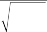
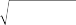
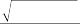
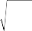

$46 million of Q. Here we run into some practical limitations of the optimization. Shorting so much of one stock might not be feasible from a liquidity point of view, and it would reduce the overall diver- sification of the portfolio. We will discuss these sorts of practical issues in more detail in the last part of this book (Chapters 16 and 17), which covers empirical examples of quantitative equity portfolio manage- ment (QEPM). In this case, a better way to achieve the neutrality would have been to relax the dollar-neutrality constraint.
13.2.4 Market-Neutral Portfolio Out of a Long-Only Portfolio
An alternative way to create a dollar-neutral portfolio or a -neutral portfolio is to create one out of two existing portfolios. A dollar- neutral portfolio can be created easily as long as we have two port- folios with different expected returns. Suppose that we have two portfolios, A and B. Portfolio A’s expected return is higher than portfolio B’s expected return. A simple way to create a dollar- neutral portfolio with a positive return is to take a long position in portfolio A and a short position of the same size in portfolio B.
For a -neutral portfolio, we need two portfolios with identical factor exposures.7 Suppose that portfolio A has factor exposures identical to benchmark B’s factor exposures. The portfolio manager could have constructed portfolio A using the technique of factor- exposure targeting described in Chapter 9. Then, taking a long position in portfolio A and a short position of the same size in benchmark B results in a -neutral portfolio. If the benchmark is also traded as a futures contract, this market neutrality can be achieved easily by shorting the futures contract.8
Suppose that a portfolio manager creates a market-neutral portfo- lio hedged against all risk factors. It is then possible to compute the expected return of this strategy. Assuming that stock returns are

7 In general, we can create a -neutral portfolio if we have two portfolios whose factor- exposure profiles are a multiple of one another.
8 In Part V of this book we implement this technique as well as the more direct construction of market-neutral portfolios as explained earlier.
driven by some multifactor model, the excess return of stock i can be represented as
ri = i + i,1 f1 +…+ i,K fK + Ei (13.5)
where there are K factors representing security returns, i,k is the sensitivity of stock i to factor k, fk is the factor excess return, and Ei is the residual return of security i. The excess return to a market- neutral portfolio when all risk factors are set to be neutral is
NL NS
r wLrL wSrS
P i i
i1
j j
j1
NL NS
L S
NL NS
L S
(13.6)
wi i wj j wi Ei wj E j
i1
j1
i1
j1
L S EL ES
Thus the expected excess return of the market-neutral portfolio is
Er
NL
wL
NS
wS
(13.7)
P i i
i1
j j
j1
According to the arbitrage pricing theory (APT), the market- neutral portfolio should have no expected excess return, but we are assuming that the market is not completely efficient and/or that the portfolio manager is good at picking outperforming and under- performing stocks. If you make a further assumption that L =—S
= (i.e., that the long portfolio’s and the short portfolio’s have
the same absolute value but opposite signs), then the market- neutral portfolio achieves its 2, that is,
E(rP) = 2 (13.8)
This is the market-neutral strategy’s hidden source of mojo. It is one of the advantages of the market-neutral portfolio over a long- only portfolio, which can achieve only 1. It is important to point out, though, that this mojo comes purely from the leverage in the market-neutral portfolio, in which the full capital is invested both on the long side and on the short side.9 Without the leverage, the

9 We will see in the margin section of this chapter that in practice the maximum mojo that can be achieved is 1.8 owing to additional cash requirements by the brokers. Theoretically, though a market-neutral portfolio can achieve two times the of a long-only portfolio.
408 PART III: Mojo

would be no greater than the long-only portfolio’s unless very big, unexploited opportunities existed on the short side.
In addition to the expected return, it is possible to calculate the variance of the market-neutral portfolio:
V(rP) = V(L - S + EL- ES)
= V(EL - ES)
= V(EL) + V(ES) - 2C(EL, ES) (13.9)
If we make the assumption that V (EL) = V (ES) = 2, then the variance of the market-neutral portfolio reduces to
V(rP) = 2 2(1 - ) (13.10)
where is the correlation coefficient between EL and ES.
Though mojo is by itself a benefit, extra comes at a price,

V rp
V rp
V rp
and this should matter to the portfolio manager. The manager should be concerned with attaining a higher information ratio than the long-only portfolio.10 The information ratio (IR) of a long-only portfolio is
IRL
Erp
(13.11)
2
2
2

2 2 1
2 2 1
2 2 1
whereas the information ratio of the market-neutral portfolio we considered earlier is
IRN
2
(13.12)
Thus the ratio of information ratios of a market-neutral to a long- only portfolio is
IRN I RL
2

22 1

2
1
2
1
2
1
2
(13.13)

10 The information ratio is a common performance measurement criterion for active managers. It is the ratio of active return to active risk. A higher ratio implies a better portfolio manager, one who achieves more return for the same amount of risk. This is described in more detail in Chapter 15 on performance measurement.